我国信托行业深度专题研究（附68家信托公司最全信息汇总）
时间：2018-06-27 08:42:04来源：证券日报-资本证券网
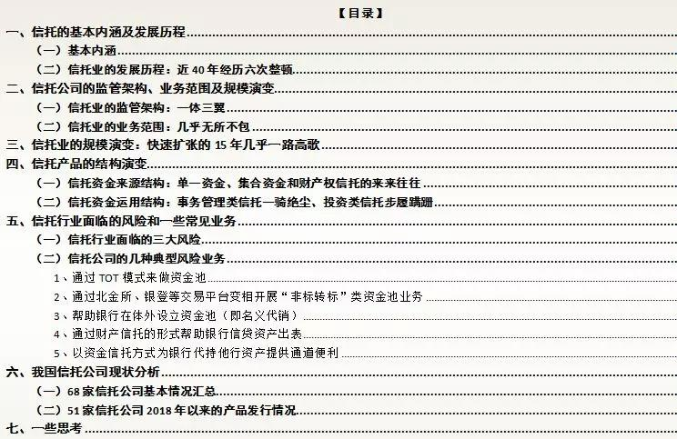
信托公司虽然号称金融业的四大支柱之一，但在我国金融业中地位曾经是那么不显眼，当年信托规模超过保险业还引起市场一片惊呼。从发展过程来看，它曾经历六次大整顿，现在可能正面临第七次整顿，信托乱象伴随着金融乱象，信托公司的发展历程中也印着金融业的发展痕迹，繁华抑或是遗梦。
一、信托的基本内涵及发展历程
（一）基本内涵
信托行业和银行业、证券业、保险业并称为中国的四大金融行业，也是经营范围最广的一个领域，我们目前所熟知的受益权、收益权等等均来源于信托行业。信托最早起源于英国，但美国开办了世界上第一家信托投资公司（最初由保险公司经营，农民放款信托投资公司，1822年）。发展模式上看，英美国家的信托主要以私人财产传承和税收规划、公益信托、财富管理（包括私人银行和家族信托等）、资产证券化（天然的SPV载体）等四个业务为主（即个人事务和证券投资信托）。日本的信托模式主要以资金信托为主，业务范围上和银行相互补充，经营长期融资业务。
谈到信托主要涉及三个概念，即信托、信托公司、信托业务。
1、信托是指委托人基于对受托人的信任，将其财产权委托给受托人，由受托人按委托人的意愿以自己的名义，为受益人的利益或者特定目的，进行管理或者处分的行为，简而言之即为“受人之托、代人理财”。定义来源于《信托法》。
2、信托公司是指依照《中华人民共和国公司法》和《信托公司管理办法（修订稿）》设立的主要经营信托业务的金融机构。
3、信托业务是指信托公司以营业和收取报酬为目的，以受托人身份承诺信托和处理信托事务的经营行为。定义来源于《信托公司管理办法（修订稿）》。
信托的投资起点均是100万，但单笔委托金额在300万元以上的自然人投资者和合格的机构投资者数量则不受限制，其中我们常常听到的信托受益权为等额份额的信托单位。
（二）信托业的发展历程：近40年经历六次整顿
1、我国信托业始于上海（1921年成立中国通商信托公司），在1949-1978年期间由于实行计划经济体制而没有发展信托业务。1979年国内恢复信托业务，同年10月我国第一家信托机构成立（中国国际信托投资公司），之后信托公司纷纷设立，在1988年达到最高峰时甚至有1000多家。不过在21世纪之前，由于我国一直没有一部统一的信托法（2001年才发布），导致我国信托业的发展一直比较紊乱，2001年之前信托业经历五次大整顿，2001-2007年是规范调整的阶段，2007年之后银信合作不断深化让信托业迈入快速发展的轨道。
2、我国的信托业在早期发展阶段，定位较为不清晰，基本上是变相从事银行信贷业务，罕有真正从事信托业务的信托公司。可以说进入21世纪以来，信托业的每一次快速发展都离不开和银行的合作，包括资本市场的配资、房地产与政信合作业务、理财合作业务、利用信托优势帮助银行规避监管等等，这期间，银行与信托相互鼓励与打气，不断进行金融创新，在助力银行发展的同时，也迎来了信托业的发展机遇，信托业规模也得以大幅增长，银信合作成为金融业中最为耀眼的创新业务。2012年，券商、基金、保险等领域纷纷依照信托业的模式，放开监管，中国所谓的大资管元年正是从2012年开始，银行与非银机构的合作造就了近5年的影子银行疯狂发展。
具体来看，2003年银监会接手信托公司的监管权后，重塑监管架构。2007年银监会发布新两规（和《信托法》并称为“一法两规”），使信托公司的业务发展逐步迈入正轨，之后适逢2006-2007年的大牛市、2008年的金融危机以及2008-2009年的4万亿元刺激计划，银信合作得到空间发展，这期间由于银行信贷规模受到管控、表外业务需求急速增长的情况下，配资业务（两轮大牛市）、政信等基建业务和房地产业务（源于信贷规模管控等）、理财资金通过信托发放贷款等通道业务开始大幅发展。当然，业务在不断发展的同时，风险也隐患也明显增加。2010年以来银监会开始出台相关政策进行约束，但信托公司天然的业务优势总能为其打开新一轮的业务发展空间。当然这一银监体系内部的合作模式使得证监会和保监会艳羡不已，2012年之后证监会体系下的机构也复制信托的业务模式得以快速发展，保监会也出台相关政策放开保险资管业务。在2012-2017年的这五年时间，大资管业务为主的影子银行业务催生了各种业务类型，也导致金融强监管和去杠杆进程在2017年正式开始。
3、进入2017年以来，信托业正面临日益严厉的监管，金融监管一统是大趋势，回归本源正成为各信托机构的努力方向。
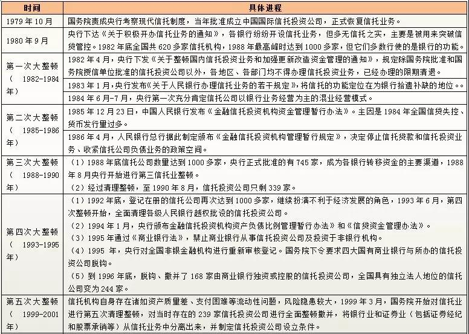
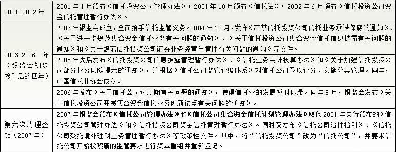
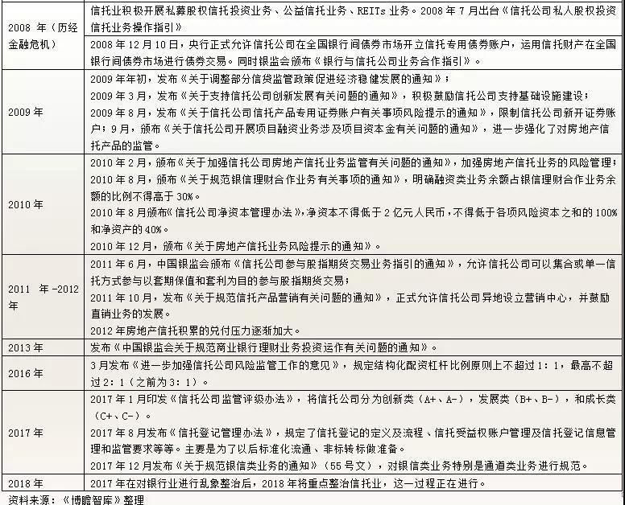
二、信托公司的监管架构、业务范围及规模演变
（一）信托业的监管架构：一体三翼
目前信托业的监管架构包括中国银保监会信托部、中国信托业协会、中国信托登记公司和中国信托业保障基金。
1、2015年3月，中国银监会内部监管架构变革，正式成立信托监督管理部（之前由非银部管理），信托被独立出来进行监管，第一任主帅为邓智毅（据悉将出任东方资产总裁，湖北银监局局长赖秀福将接棒）。
2、中国信托业协会成立于2005年5月，是信托业的自律组织，于2015年推出《信托公司行业评级指引（试行）》，简称“短剑”体系（CRIS）（包括资本实力指标、风险管理能力指标、增值能力指标和社会责任指标四个方面。该评级体系与银监会的《信托公司监管评级与分类监管指引（2014年8月修订）》相互弥补。
3、中国信托登记公司（简称中信登）于2016年12月26日正式揭牌成立，其中中债登持股51%，中信信托、重庆信托、中融信托、建信信托、上海信托、民生信托、中航信托、平安信托等8家信托公司分别持股3.33%，中国信托业协会和中国信托业保障基金分别持股0.33%和2%。中信登的业务范围包括：信托产品、受益权信息及其变动情况登记，信托受益权账户设立和管理，信托产品发行、交易、清算、结算、估值、信息披露、查询、咨询和培训等服务以及部分监管职能。
4、中国信托业保障基金于2014年12月12日成立，保障基金主要由信托业市场参与者共同筹集，用于化解和处置信托业风险的行业互助资金。
（二）信托业的业务范围：几乎无所不包
信托业可能是业务范围最广的一类金融行业，几乎无所不能，具体包括信托贷款、投行业务、证券业务、基金业务、租赁业务、保管业务等等。具体来看：
1、包括资金信托、财产（权）信托、公益信托、慈善信托等四大信托业务，其中财产（权）信托又包括动产信托、不动产信托、有价证券信托及其它等。
2、可以发起设立基金公司从事投资基金业务。
3、可以从事重组、并购、项目融资、公司理财、财务顾问、证券承销等投行业务。
4、可以办理居间、咨询、资信调查、保管及保管箱、对外担保、外汇信托业务。
5、信托公司管理运用或处分信托财产时，可以依照信托文件的约定，采取投资、出售、存放同业、买入返售、租赁、贷款等方式进行。中国银行业监督管理委员会另有规定的，从其规定。信托公司不得以卖出回购方式管理运用信托财产。
6、可以根据市场需要，按照信托目的、信托财产的种类或者对信托财产管理方式的不同设置信托业务品种。
但是对于信托公司的固有业务，则有一些限制，信托公司固有投资业务限定为金融类公司股权投资、金融产品投资和自用固定资产投资。此外，《信托公司管理办法》规定信托公司不得开展除同业拆入业务以外的其他负债业务，且同业拆入余额不得超过其净资产的20%。且对外担保余额不得超过其净资产的50%。
三、信托业的规模演变：快速扩张的15年几乎一路高歌
信托行业的资产分为固有资产（表内）和信托资产（表外）两类，这里面讨论得主要是信托资产，而事实上从信托的法律属性上来看，表外业务是信托行业的天然业务，反倒是表内业务显得较为另类，这一点刚好和银行业相反。
（一）2002年底我国信托资产余额仅为7000亿元，2012年大资管元年规模突破5万亿元（2008年金融危机时尚不足1.5万亿元），10年时间增长了6倍左右。
（二）2012年之后，我国信托业开始快速发展，2017年底信托资产余额达到26.25万亿元，大资管的最初五年，信托资产实现超过5倍的增长，这两次增长均利益于信托与银行的深度合作。
（三）在金融监管加强的2017年，信托业仍然一枝独秀保持快速增长，特别是在其它通道（如基金子公司、券商资管等）规模明显压缩的情况下，信托资产余额全年反而大幅增长了6万亿元，规模从20.22万亿元大幅增长至26.25万亿元。
（四）进入2018年，监管重点由银行转移至信托，并且开始查缺补漏，信托业业务面临萎缩，一季度规模下降0.64万亿元，这是15年以来的第二次下降（上次为2015年3季度下降0.25万亿元），不得不引起警惕。
（五）在2013年三季度至2016年一季度期间，信托资产增速保持长达三年的趋势下降，这一时间主要是由于大资管时代，各类监管机构纷纷放松所辖行业（如证券、保险、基金等），使得竞争变得尤为激励。
可以看出，实际上从2010年开始信托资产的增长便相对比较稳定，这同样是利益于银信合作，2008年的4万亿元刺激计划以及信贷规模管控为银信合作提供了天然的土壤，只赚取通道费的信托省时省力，在这期间取得了飞速的发展。

四、信托产品的结构演变：偏离主业越来越远的水中映月
银监会在2016年曾试图将资金来源和资金运用两个角度混合，把信托分为八大类（债权信托、股权信托、标准化产品信托、同业信托、财产信托、资产证券化信托、公益信托和事务信托），但后来出于各种原因，而不了了之，分类方式是否有变化尚不确定。现在我们仍然从资金来源和资金运用两个角度进行拆分研究。
（一）信托资金来源结构：单一资金、集合资金和财产权信托的来来往往
1、从资金来源看，信托可以分为资金信托和财产信托，而资金信托（就是把货币资金直接给信托公司）又可以根据委托人数量进一步划分为单一资金信托（只有1个委托人）和集合资金信托（超过1个委托人）。其中，集合信托期限不得少于1年，且信息需要公开，风险相对较小。而财产信托是指将非货币形式的财产、财产权等委托给信托公司管理（包括房产、股权、债权、名画、古董等等）。
2、集合信托一般投资于监管部门批准发行或上市的金融品种，且委托人多为自然人、信托公司在资金运用过程中起主导作用，在股权投资和证券投资的集合信托产品中经常借助于分级，是最正常的信托产品，就像是买一个理财产品。
3、单一信托由于信息无须公开、私密性较好、资金运用和来源几乎均较单一、委托人在资金运用过程中起主导作用等特点，通道业务类较多。
4、从构成来看，单一资金信托一直占据主导地位，其占比最高在2008年底曾达到83.27%，之后趋势性下降到目前仍然高达45.54%。我们看到集合资金信托占比已升至近40%%，管理财产信托占比也已升至15%以上。
5、本质上看，现在集合信托、财产权信托很多情况下也是为了规避监管，如地方政府如果需要融资，出于监管需要无法从银行获得，便会找到信托公司，发一个集合资金信托计划募集资金。对于财产权信托同样如此，即商业银行将贷款类资产或其收益权直接转让给信托公司，由信托公司发行财产权计划进行接盘等等。
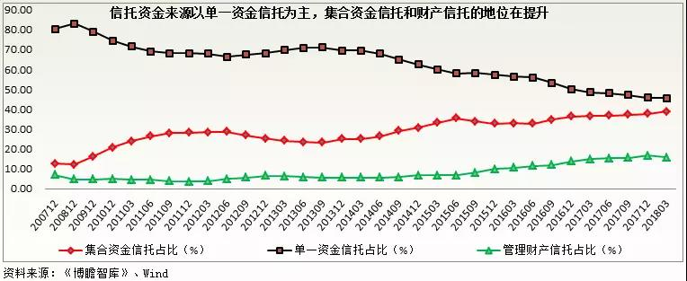
二）信托资金运用结构：事务管理类信托一骑绝尘、投资类信托步履蹒跚
从信托资金运用来看，可以分为三大类（即融资类、投资类和事务管理类）。
1、融资类信托是指在信托资金与借款人之间形成债权债务关系的信托，即像贷款类资产一样，有固定的收益来源、有明确的抵押担保等，具体包括贷款类信托、债权投资信托、融资租赁信托等等。而与此相对应得是投资类信托，即在信托资金与借款人之间形成股权关系的信托，收益来源不固定，风险相对来说较小，具体包括证券投资信托、股权投资信托、权益投资信托等等。
2、事务管理类信托目前还没有明确的定义，可以简单理解为除融资类信托和投资类信托之外，既不负债募集资金、也不负责寻找资产，只是负责监管、结算、托管、清算、通道等事务性工作，这里面通道业务的性质更多一点，即为规避投资范围、杠杆约束等监管要求的通道类业务，没起到什么作用，也是今年监管的重点督察对象。
3、可以看出，从2012年开始，事务管理类信托占比便开始大幅攀升，从2012年的12%左右已经升至2017年底的59.62%，5年的时间提升了47个百分点以上。
4、相较之下，融资类信托则从2008年60%以上大幅降至目前的15%附近，投资类信托则有起伏，目前也仅略超过20%。
5、不过，今年一季度，事务管理类信托占比略有下降，已由59.62%降至59.12%，下降0.5个百分点，监管效应已经在发挥作用。
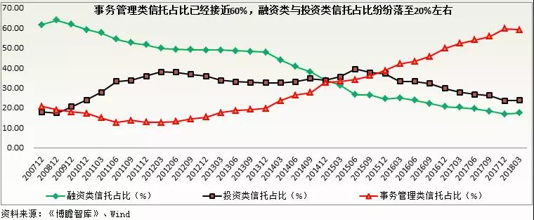
五、信托行业面临的风险和一些常见业务
监管部门在2017年重点整治了银行业，今年的重点已经明确是信托业，去年再次疯狂一年的信托业在今年一季度已现疲弱的迹象。这里主要考虑信托行业所开展的那些以规避监管为目的的业务。
（一）信托行业面临的三大风险
从整个信托行业来看，主要面临信用风险、流动性风险和交叉性风险三个方面，并且主要集中在融资类信托、证券投资信托等斋，这里面最大问题是规避监管要求的信托业务，面临的潜在风险较高，直接表现为资金池业务、出表业务、规避投资业务等等。
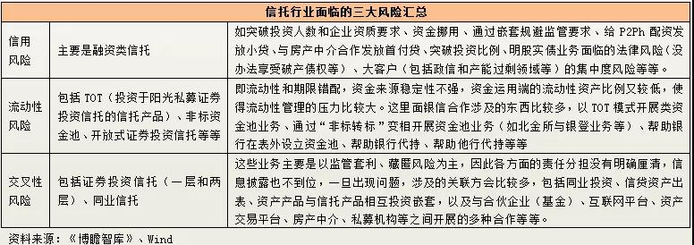
二）信托公司的几种典型风险业务
1、通过TOT模式来做资金池
一层信托有时没办法达到监管的要求（如期限完全匹配等），因此TOT（Trust of Trust）是一种可行的方式，即通过滚动发行的多期限开放式信托产品向投资者募集资金，通过第二层信托产品投资于非标资产，即母基金和子基金的形式，通过这种方式可以达到规避监管、藏匿风险的目的，当然这种模式如果穿透的话仍然存在期限错配的问题，流动性风险不能忽视。
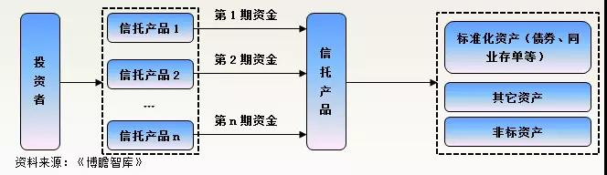
2、通过北金所、银登等交易平台变相开展“非标转标”类资金池业务
这类模式是信托公司首先委托第三方去投资一个资管计划（底层资产为非标等），再设立一个信托资金池，第三方将上述资管计划受益权在交易平台（如北金所、银登等）挂牌，信托公司通过信托资金池去摘牌，以此达到规避投资的目的。从表面上看，信托资金池投资的是标准化份额资产，但究期本质还是通过协议转让的方式完成对接，一是没有流动性，二是价值不公允，三是底层资产不清晰等等，也属于资金池业务，存在流动性风险。
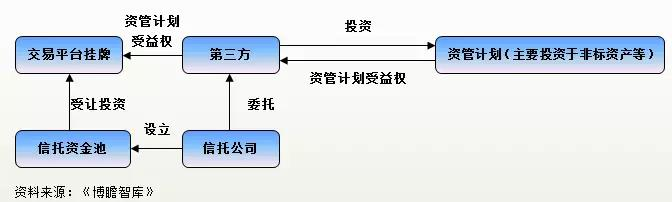
3、帮助银行在体外设立资金池（即名义代销）
这种模式下，银行代销不同期次、滚动发行的信托产品，并负责这些信托产品的统一管理，信托公司在这里仅起到提供资金归集和发放产品的作用，是一个事务管理型信托，但存在责任划分不清的问题。
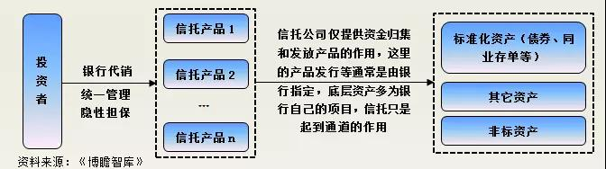
4、通过财产信托的形式帮助银行信贷资产出表
这里面其实蕴含着两种模式，第一种是商业银行将不良资产转让给资产管理公司代持，并承诺到期回购，资产管理公司将代持的不良资产委托给成立的财产权信托，形成信托收益权，由商业银行负责不良资产的处置清收工作等，并承诺回购信托收益权。其本质上是一种代持行为（即假出表、为了规避监管）。
第二种模式是商业银行直接将信贷资产（收益权）委托给财产权信托，并通过挂牌、证券化等形式由理财产品或第三方机构对接摘牌，达到非标转标和信贷资产出表的目的。
这两种模式存在的统一问题是隐性担保以及信托公司面临合规风险。
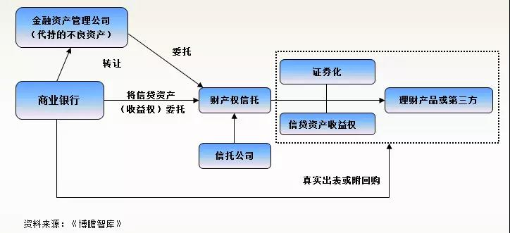
5、以资金信托方式为银行代持他行资产提供通道便利
这种械下，由于商业银行1受困于监管指标及合规等影响，无法做项目，便将该项目推荐给商业银行2代持，通过资管产品和信托产品两层来做，同时商业银行1与信托公司成立了一个资金信托产品来对接，并对该项目提供保函和承诺回购信托受益权。表面上看是由商业银行2来代持，但实际上是信托代持，信托公司同样面临风险。
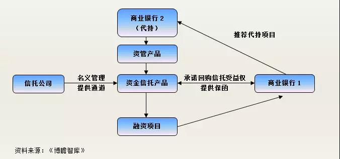
（一）68家信托公司基本情况汇总
1、目前国内只有68家信托公司，这68家信托公司可以进一步划分为16家央企控股，13家金融机构控股（包括金控集团、ABC和银行），29家地方控股、10家民营企业控股。可以说，68家信托公司各有不同，主要因为其股东背景和作业风格不同。
2、68家信托公司有11家位于北京、7家位于上海、4家位于杭州，其余如成都、合肥、南昌、南京、深圳、乌鲁木齐、武汉、西安、郑州、重庆等10个城市分别有2家信托公司。
3、目前监管机构已经允许外资机构参股国内信托公司（可以突破20%的比例限制），现阶段国内共有8家信托公司有外资背景，分别为紫金信托（三井住友信托银行，19.99%）、国通信托（东亚银行，19.99%）、中航信托（华侨银行，19.99%）、中粮信托（蒙特利尔银行，19.99%）、百瑞信托（摩根大通，19.99%）、北京国际信托（威益投资，15.30%）、兴业国际银行信托（澳大利亚国民银行，8.42%）和新华信托（巴克莱银行，5.57%）。
4、目68家信托公司中有3家完成了正式上市进程（安信信托和陕国投信托于1994年在A股上市、山东信托于2017年在港股上市），一再被拖慢了发展进程，信托业在最早也一直被视为金融业的异类（有点像今天的P2P），虽然本不应该如此。同时，还有其它3家信托完成了曲线上市（通过借壳），如江苏信托借壳ST舜船曲线上市（2016年12月1日）、昆仑信托借壳ST济柴曲线上市（2016年12月15日）、五矿信托借壳ST金瑞曲线上市（2016年12月16日）。此外，由于信托业的经营范围非常广，某种程度上和证监会的管辖机构具有非常大的业务交叉性，因此上市并不容易，其理由便是主营业务不清晰，所以才有了上述3家信托公司的借壳上市。
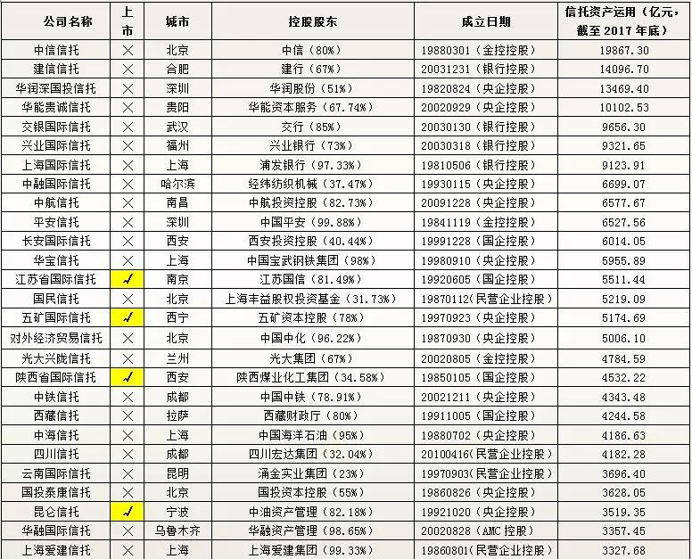
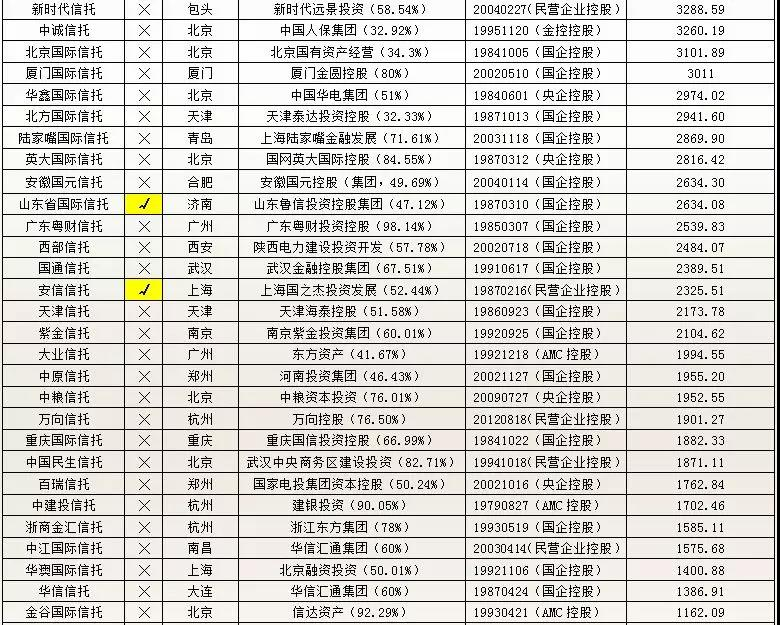
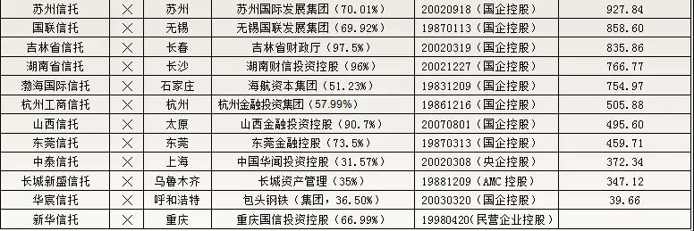
（二）51家信托公司2018年以来的产品发行情况
我们搜集了51家信托公司2018年以来发行的产品数据汇总如下，可以看出每家信托公司几乎都有自己的特点，风格差异较大，有的信托公司执着于做通道，信托产品类型全部为其它类（事务管理型）。有的信托公司沉迷于融资类业务，贷款和债权类信托占比较高。也有的信托公司在股权类信托方面造诣较高，如华能信托等。整体上看，做主动管理类的信托公司仍然较小，这里面的中航信托、云南信托、四川信托、国投泰康信托、金谷信托、西藏信托发行了较多的证券投资类信托。
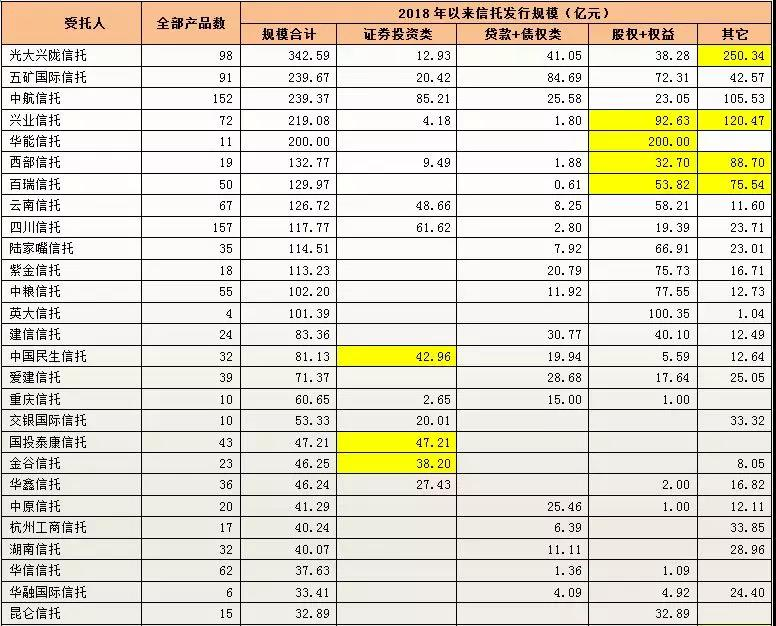
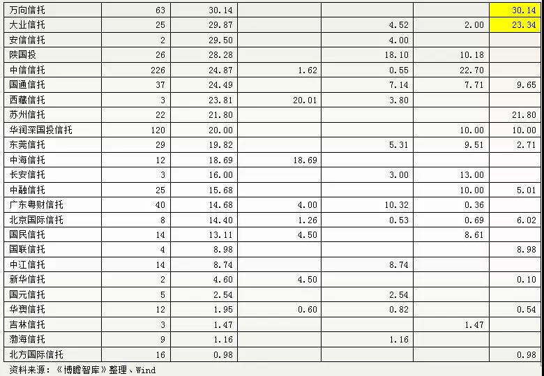
七、一些思考
（一）信托业一直被认为是金融业的四大支柱之一，无论是国外还是国内来看，基于信托架构的法律关系优势，信托行业几乎均拥有比较广泛的牌照资格，这是其它四大行业所无法比拟的。
（二）然而，这一优势信托业并没有好好利用，乱象一再丛生，2000年之前的五次整顿，2000年之后的两次整顿（包括本次），金融乱象在信托行业中可谓是体现得最为明显。
（三）信托公司可以发起设立基金、做投行业务、做银行业务等，然而由于通道的便利、赚钱的容易、风险较低等，信托公司沉迷于融资类业务和通道类业务，这虽然有中国经济大环境的使然，但信托公司置自身主业于不顾，拿来主义的作风一次双一次地将自己置身于危险的境地，从这个角度看，2000年以后和2000年以前似乎并没有太大差异。
（四）信托的主业应集中于做高端财富管理、家族信托、慈善信托、资产证券化，信托的风险隔离载体是天然的SPV，是最适合做资产证券化业务的，目前来看信托公司的资产证券化业务似乎仍处于低级阶段，它面临诸多同业的竞争，如基金子公司、券商资管等等。
（五）财产权信托目前在信托业中的发展仍然不够，信托公司的财产信托似乎总是局限于贷款等债权类资产，这实际上是变相的银行的业务，发展在房产、股权等为主的财产信托是当务之急。
（六）我国的阳光私募最初就是基于信托，证券投资类信托目前在一些信托公司也开展得如火如荼，而目前的68家信托公司相较于之前的数百家，具有更高的牌照资源价值，应好好发挥利用信托公司在股权类和权益类领域的先天优势。
（七）关于资管新规的影响，目前市场上的解读仍然比较宏观，严格来讲，信托产品多以私募为主，其适用的内容仍然需要相关细则进一步明确，如果按照资管新规的要求来一一对应难免不合理，有失偏驳，包括通道业务、打破刚性兑付、禁止多层嵌套、禁止期限错配等等。
- 上一篇：信托公司股票质押业务研究
- 下一篇：一文读懂战略配售基金
相关阅读